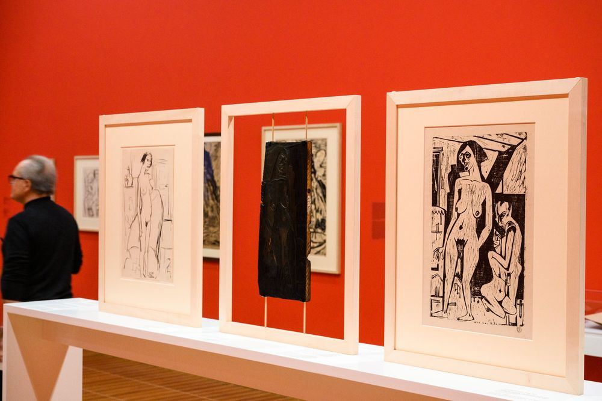
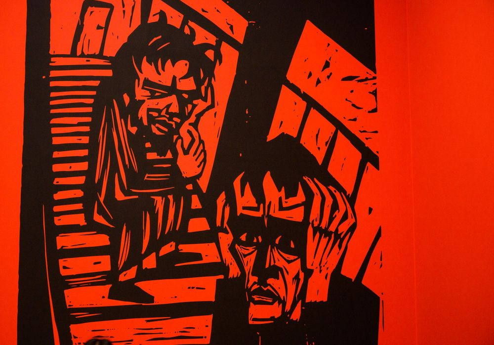
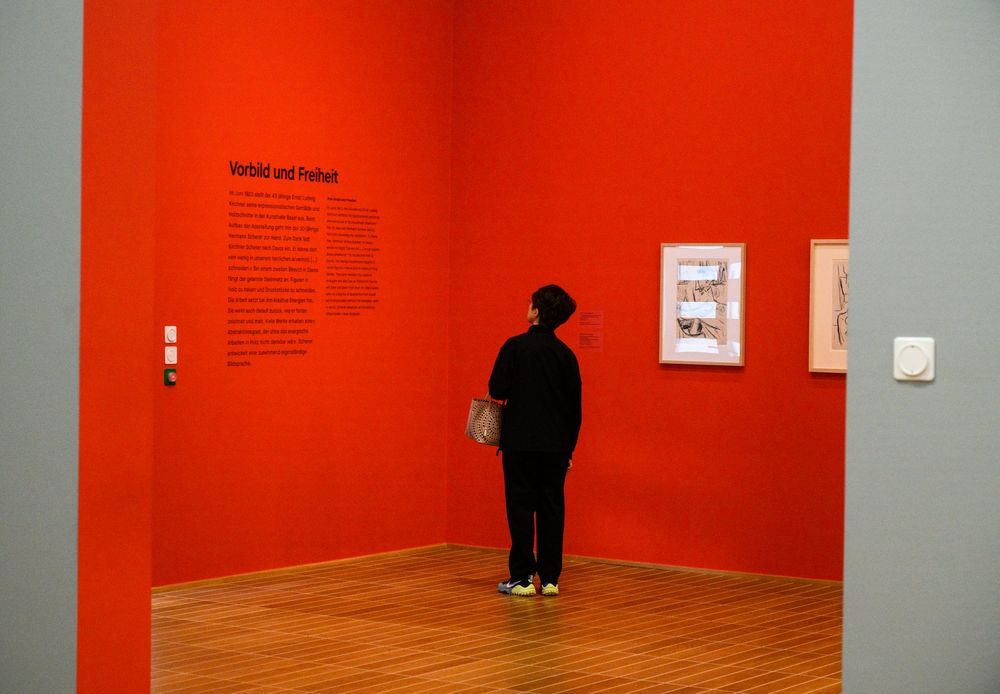

Hermann Scherer, Kunstmuseum Basel











Hermann Scherer, Kunstmuseum Basel
Ausstellungsdokumentation, 2022
Für Peter Bosshart, der den Nachlass von Hermann Scherer betreut und die Ausstellung im Kunstmuseum Basel mitgestaltet hat, habe ich die Ausstellung dokumentiert. Räume, Skulpturen, Holzschnitte und die Menschen davor.